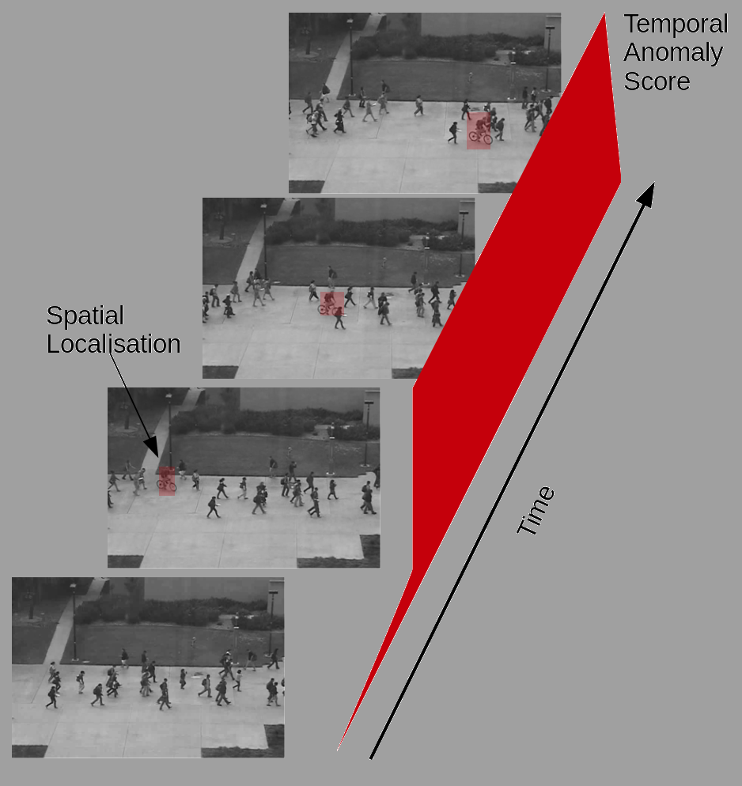
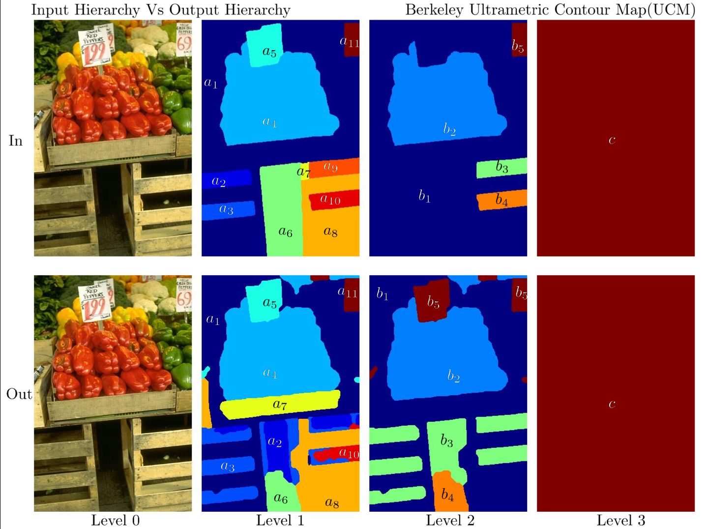

B Ravi Kiran – Technical Lead, ML, Navya
Review - Deep learning for Video Anomaly Detection (DL-VAD)
|
 |
Videos represent the primary source of information for surveillance applications and are available in large amounts but in most cases contain little or no annotation for supervised learning. This article reviews the state-of-the-art deep learning based methods for video anomaly detection and categorizes them based on the type of model and criteria of detection. We also perform simple studies to understand the different approaches and provide the criteria of evaluation for spatio-temporal anomaly detection. Read More |
Random Forests Pruning - A Study
 |
Random forests perform bootstrap-aggregation by sampling the training samples with replacement. This enables the evaluation of out-of-bag error which serves as a internal cross-validation mechanism. Our motivation lies in using the unsampled training samples to improve each decision tree in the ensemble. We study the effect of using the out-of-bag samples to improve the generalization error first of the decision trees and second the random forest by post-pruning. A preliminary empirical study on four UCI repository datasets show consistent decrease in the size of the forests without considerable loss in accuracy. |
Time series anomalies detection
 |
We develop a multi-scale streaming anomaly score that takes into account a family of window sizes, making the algorithm scale invariant across a different types of time series with varying pseudo-periodic structure. We explore different aggregation methods of the multi-scale anomaly score to obtain a final anomaly score. We evaluate the performance on the Yahoo! and Numenta Anomaly Benchmark(NAB) datasets.
|
Tumor detection in Hyperspectral images
 |
Hyperspectral images of high spatial and spectral resolutions are employed to perform of brain tissue segmentation for visualization of in-vivo images. We use hierarchical non-negative matrix factorization H2NMF to identify the pure- pixel spectral signatures of blood, brain tissues, tumor and other in-scene materials. A review of medical Hyperspectral Imaging is provided. |
Braids and energetic lattices
 |
Finding the optimal subtree, or optimal cut from a hierarchy is a combinatorially complex problem. Dynamic programming was used to calculate a greedy solution. The provisional optimum of the DP under uniqueness is formulated as a lattice. We expand the solution space from hierarchy to braids. The largest partition family that preserves the energetic ordering and thus the DP substructure is defined. Practically provide an intuitive way to combine multiple information sources in multivariate problems, and accomodating for ground truth and machine segmentation variation.
|
Multilabel optmization on hierarchies of segmentations
|
 |
|